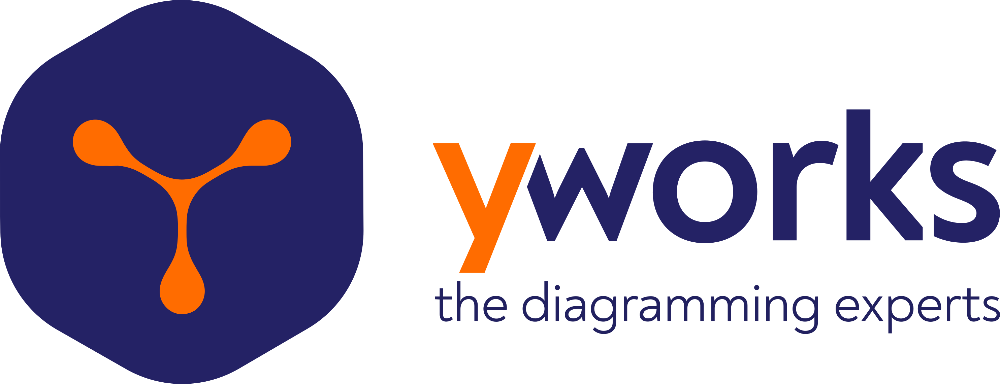

The 33rd International Symposium on Graph Drawing and Network Visualization
September 24–26, 2025 · Norrköping, Sweden
Registration is now open
Register Now • View Fees • Travel & Stay
About Graph Drawing 2025
Graph Drawing is concerned with the geometric representation of graphs and constitutes the algorithmic core of Network Visualization. Graph Drawing and Network Visualization are motivated by applications where it is crucial to visually analyze and interact with relational datasets. Examples of such application areas include data science, social sciences, Web computing, information systems, biology, geography, business intelligence, information security and software engineering.
The symposium on Graph Drawing and Network Visualization has been the main annual event in this area for more than 30 years. Its focus is on combinatorial and algorithmic aspects of graph drawing as well as the design of network visualization systems and interfaces.
Important Dates
| Events | Dates |
|---|---|
| Abstract submission deadline | |
| Paper submission deadline | |
| Notification of paper acceptance | |
| Poster submission deadline | |
| Notification of poster acceptance | September 1, 2025 |
| Final paper versions due | September 1, 2025 |
| PhD school | September 22–23, 2025 |
| Symposium | September 24–26, 2025 |
All deadlines are understood to be 23:59 AoE.
Sponsors
Platinum Sponsor
 Carl Tryggers Foundation for Scientific Research |
Gold Sponsors
|  yWorks |
Tom Sawyer Software |
Silver Sponsor
 Visual Sweden |
Contributors
 Visualiseringscenter C |
 Linköping University |